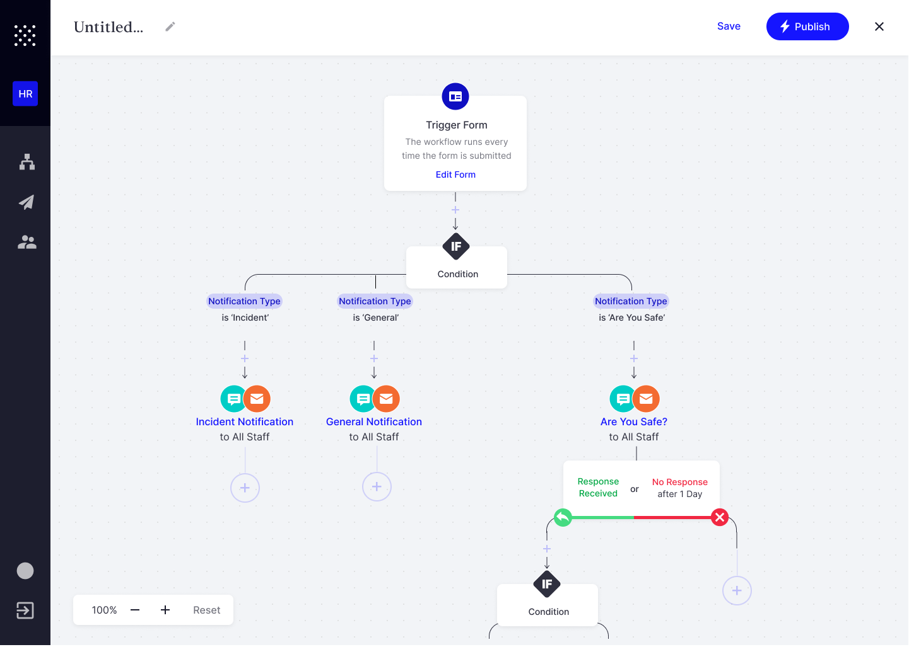
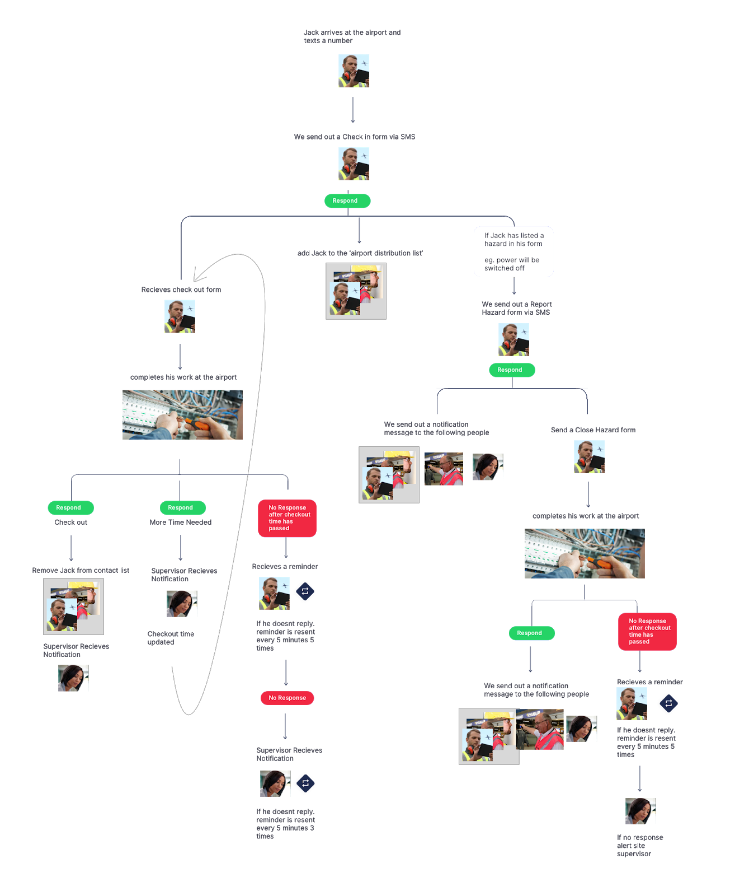
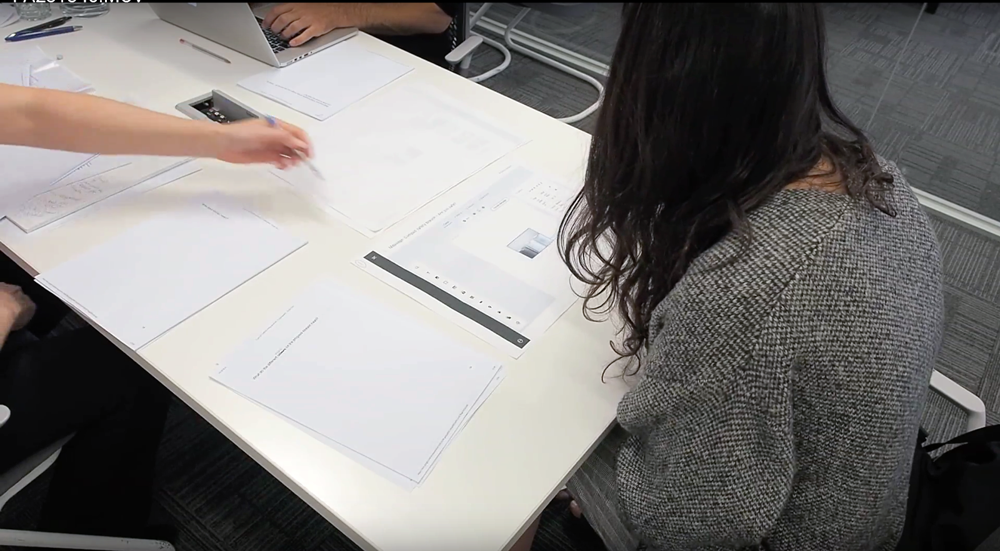
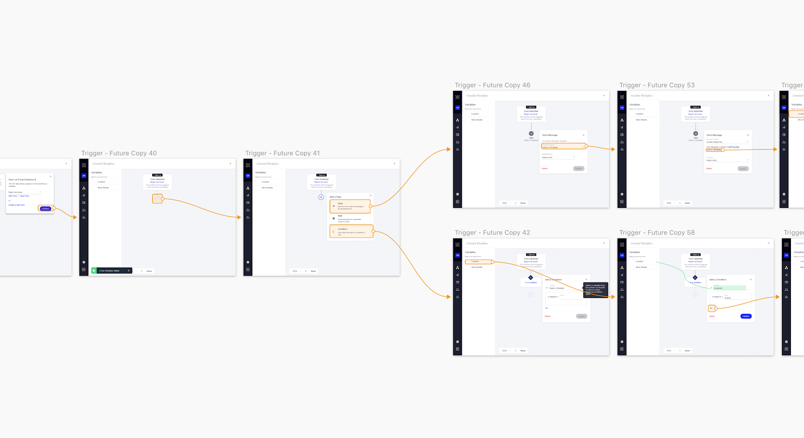
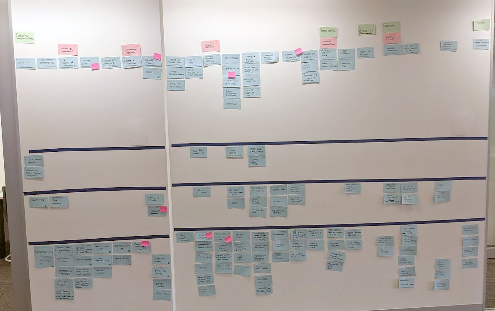

Whispir allows users to automate sms and email sending. Our team updated the existing interface to a drag and drop workflow builder.
Early concept design and research work was shared by the entire UX team, including myself and three other designers. Whispir changed the structure of the product teams halfway through the project, and I became the Lead Designer.
We conducted a series of customer interviews and found most users were intimidated by the existing interface. In fact, the majority of workflow setup was not being done by the customers themselves, but by Whispir's in-house support and enablement teams.
This early research informed our goal - create a self-service interface, suitable for our less technical customers. To add context to this goal, I documented 8 of Whispir's real use cases, creating flow diagrams and simple personas.
The biggest challenge was replacing the code snippets used in the existing platform with something easier to understand.
Several off-the-shelf workflow solutions were identified by the project managers and engineers, and the UX team created various concept designs. We took two of the ideas with the most promise and tested paper prototypes with customers.
We found that a 'click to add a step' approach (used by Messagebird, Activecampaign) performed significantly better than a 'drag to connect steps' approach (used by Twilio, Total.js flow)
With a better idea of how customers would react to a workflow tool, I expanded on the design in a high fidelity prototype based on the most successful flow, and updated the language used.
For example, 'start your workflow' created an expectation that users could pause or stop a workflow, which was not supported in the first release. I used the term 'trigger your workflow' to better reflect this.
Using a user journey map, we divided the work into multiple iterations, starting with the simplest real customer use case we could find: sending an emergency alert SMS to a predefined list when an online form is submitted.
In the lead up to the first release, we ran three more rounds of user testing, including upcoming designs in Figma, and the live changes in a local development environment.
Testing the live code turned out to be particularly useful, as we found several users struggled with the 'drag to scroll' navigation we'd implemented. We updated the browser scroll function to zoom, a pattern borrowed from google maps, which performed better in later tests.
Once we had users in the platform, I focused on observing sessions in fullstory, logging and prioritising usability issues in the backlog.